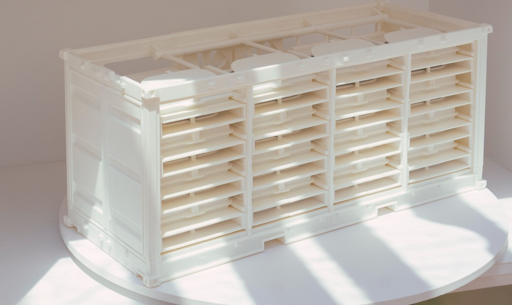
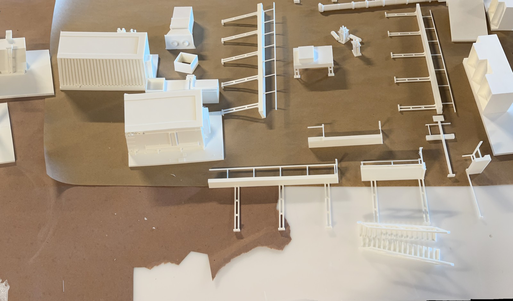
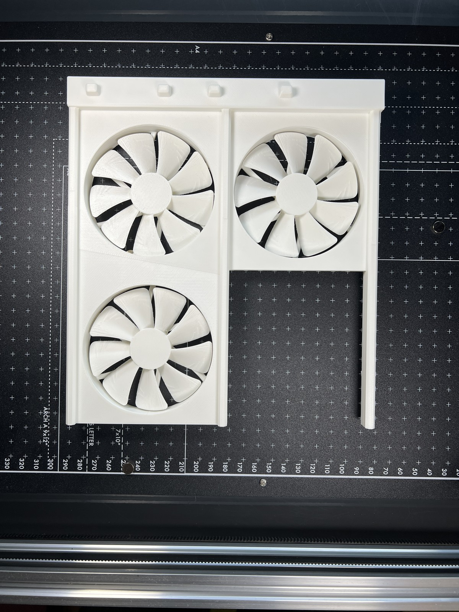
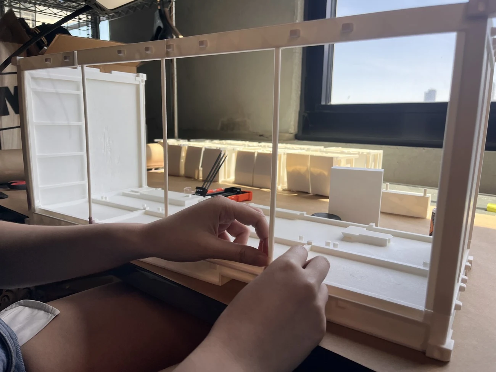
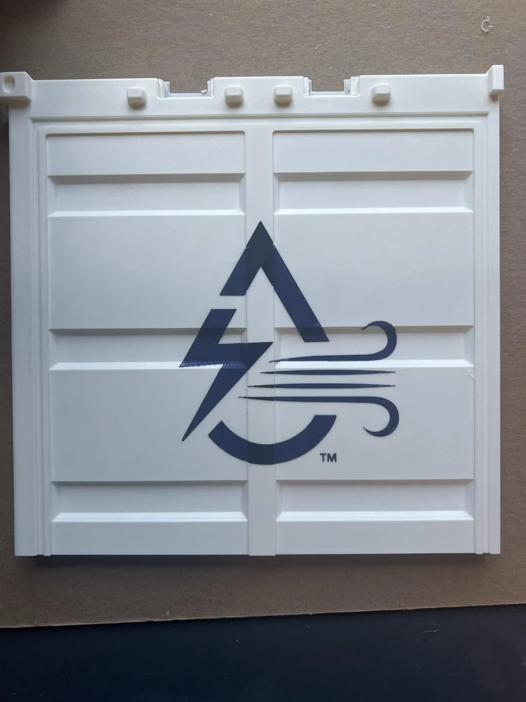
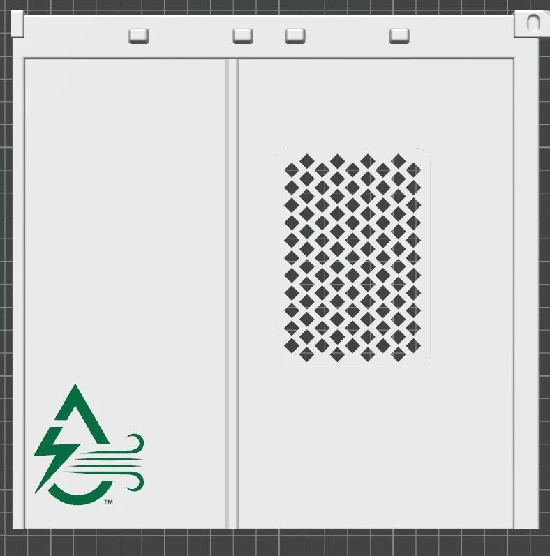
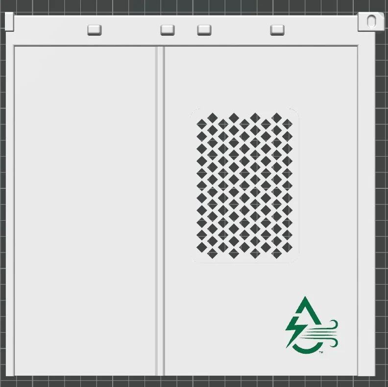

Manufactured · Design & Fabrication Intern · Brooklyn, NY · May–July 2026
GE Vernova & AirJoule
Two exhibition models, from supplied CAD to print and assembly.
With guidance from the team engineer, I adapted supplied geometry and helped fabricate an AirJoule atmospheric water generation model and a GE Vernova direct air capture model for the Aspen Ideas Festival.

01 / Print preparation
Two models with different print problems.
For GE Vernova, I split parts, repaired geometry, and thickened fragile features. For AirJoule, I split parts and adjusted print orientation and supports with guidance from the engineer.


02 / Assembly and finish
Model fitted covers where prints needed a cleaner surface.
On both models I measured areas affected by print defects, modeled cover pieces in Fusion, and printed and glued the covers in place. I also helped assemble the split parts.

03 / AirJoule details
Logo placement and a tap to learn more.
I mocked up logo placements on the supplied geometry. I also embedded NFC tags so a visitor could tap the model with a compatible phone and open the AirJoule website.



04 / At the festival
Prepared for shipment and displayed in Aspen.
Our team prepared and shipped the models for the exhibit.
Team credits. Fabrication by the Manufactured team. Wes Yan, Head Mechanical Engineer.
Project imagery © Manufactured Inc., used with permission.